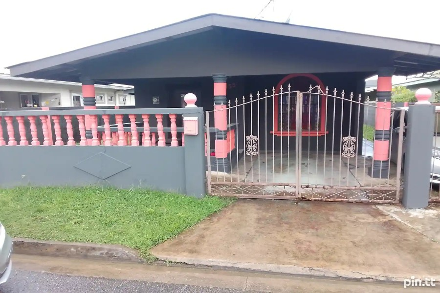
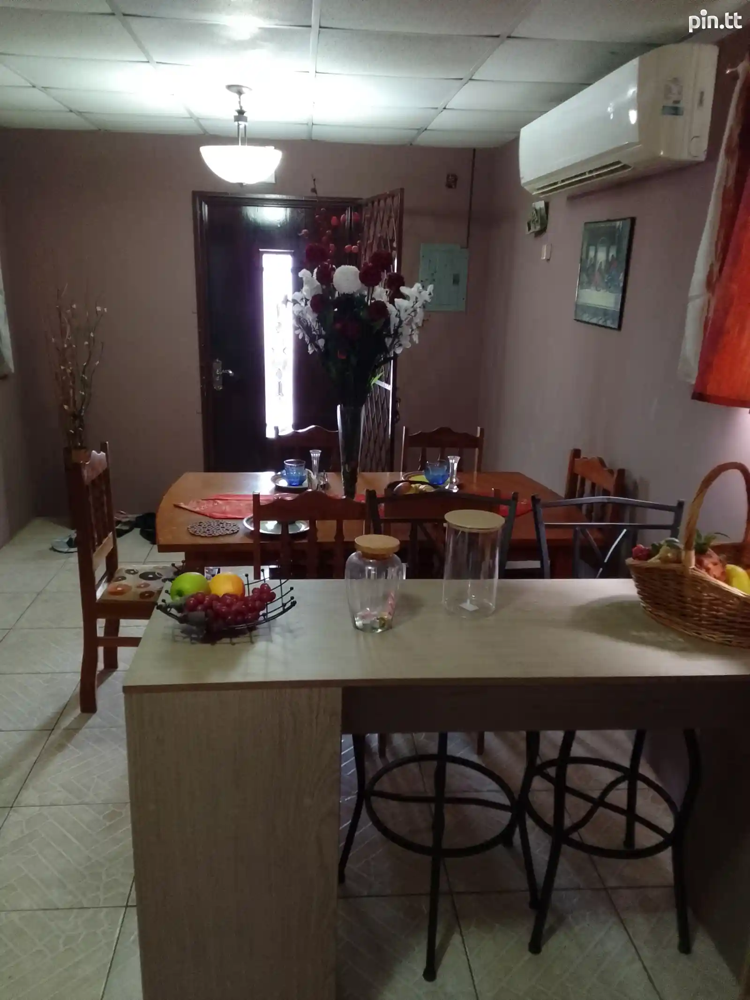
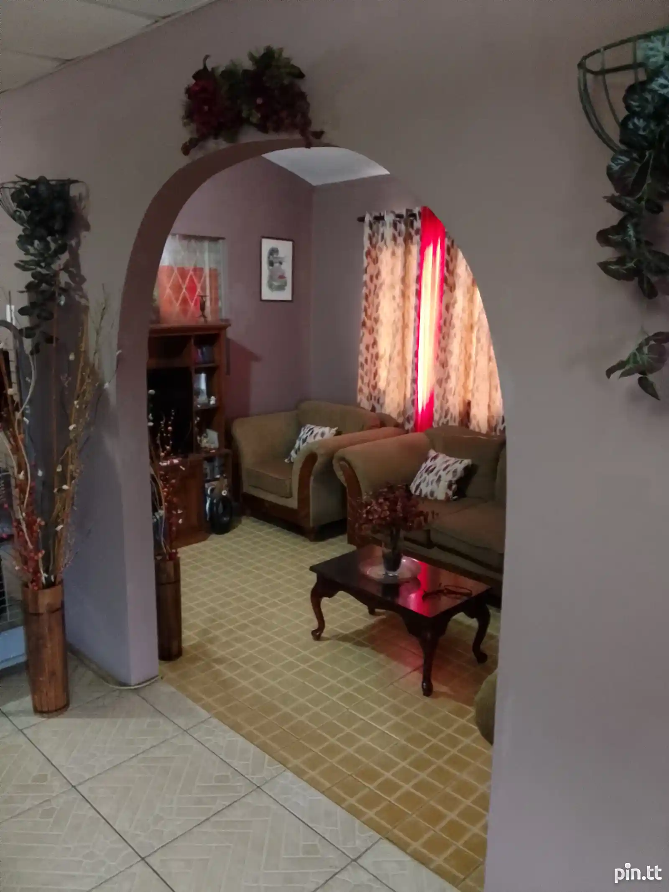

Property Details
Location: #30 Apple Road, Las Lomas, Trinidad
Price: $1,100,000
Bedrooms: 2
Bathrooms: 1
Square Footage: 2,500 sq ft
Lot Size: 1 lot
Description
Inside, the rooms are small and cozy, with low ceilings and narrow hallways. The floors might be made of wood, creaking slightly with age, or simple tiles. The walls are painted in muted colors, with minimal decorations—perhaps a few family photos or simple paintings. The furniture is functional and a bit worn, with a few mismatched pieces here and there. The living room might have a small sofa and an old wooden coffee table, while the kitchen is basic, with essential appliances and a small dining table. Bedrooms are modest, with simple beds and wooden dressers. There is a sense of practicality throughout the house, with each space used efficiently.
Contact Information
If you're interested in this property or would like to schedule a viewing, please contact us at (868) 330-2507 or email us at dreamcatchersagency.tt@gmail.com.
  